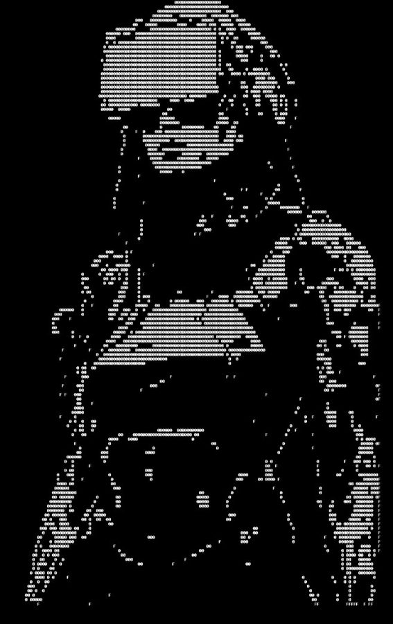

Anyone can list "ransomware intelligence" on a page. This is what it looks like in practice — live operations, on the record, with the receipts.

Logs, packet captures, ransom notes, hash dumps — the raw material never arrives clean. The work below is what's left after it's been read, mapped, and turned into something a defender can act on.
I discovered and documented the largest credential-harvesting operation ever found targeting network perimeter infrastructure. A custom adversary tool — written in Russian, compiled in Go — had silently compromised over 430,000 firewalls across 194 countries, passively intercepting authentication traffic across 24 different protocols without tripping a single alert.
The operation had harvested 110 million credentials — NTLM hashes, Kerberos tickets, cleartext passwords — from devices that were never meant to be a listening post. The disclosure triggered a CISA emergency alert and confirmed a breach at a NATO-aligned defense contractor. I mapped the full attack chain, from initial access through lateral movement to data exfiltration, so defenders had something they could actually act on.
Most threat intelligence counts victims after the damage is done. We did the opposite. As part of the Resecurity HUNTER effort against BlackLock — a ransomware-as-a-service operation on track to become the most prolific of 2025, having grown its leak volume by 1,425% in a single quarter — the team identified a Local File Include flaw in the group's TOR data-leak site and turned it inward.
That foothold exposed their server configuration, credentials, and full command history from inside their own infrastructure. Their fatal mistake was mundane: reused passwords, copy-pasted straight into the shell, valid across multiple accounts. Operators who could ransom a government couldn't manage their own OPSEC.
Access changed the mission from watching to intercepting. The team pulled over 7 TB of stolen data and warned victims before their information ever went public — reaching the Canadian Centre for Cyber Security 13 days ahead of one planned leak, and CERT-FR/ANSSI two days ahead of a European legal provider's client data going live. By March, BlackLock and Mamona were offline and the operator had vanished.
When two operators cost Transport for London £29M and 140+ systems, the lesson wasn't sophistication — it was social engineering and a helpdesk that trusted a phone call. I track exactly this tradecraft: the human layer falls first, long before any zero-day.
The BlackLock operator rebranded across three names to shake investigators. It didn't work — reused infrastructure and credentials tied the aliases together. Attribution that holds up isn't a hunch; it's the pattern an adversary can't fully erase.
The measure of intelligence isn't a report filed after a breach — it's a victim notified before theirs. Getting inside the adversary's publication pipeline is what converts monitoring into prevention. That's the standard I bring to your program.
Every entry here is a real, published operation — not a hypothetical. As new engagements clear disclosure and legal review, they get added here with the same standard: the narrative, the evidence, and the source.
A structured classification system for prompt injection techniques, built as independent AI-security research — the same framework I use to scope and score findings in AI agent red team engagements. Explore the taxonomy →
Investigated a sophisticated RaaS group's breach of a UAE financial institution — a Go-based locker targeting Windows, Linux, NAS, and ESXi, run through SystemBC proxy infrastructure for covert C2. Every TTP mapped to MITRE ATT&CK; victim infrastructure verified through WHOIS intelligence.
Full investigation of the Black X hacker group's claimed leak of ANC data — 2.3 million records spanning phone IDs, emails, and physical addresses. Findings cross-verified through MyBroadband, Daily Maverick, BizNews, and DeXpose.io.
GitLab shipped a fix for an ambiguous branch/tag reference bug (CVE-2025-12506) in three places — web UI, Archive API, GraphQL. I found two REST endpoints, Repository Files and Compare, where that same fix never landed, silently resolving to an attacker-controlled tag instead. Live-verified against production with real branch/tag collisions, not just source review — currently under coordinated disclosure.
One fifteen-minute scoping call tells you which of your assets an adversary would reach first, whether your AI agents can be turned against you, and what it takes to close the gap. No cost. No obligation.